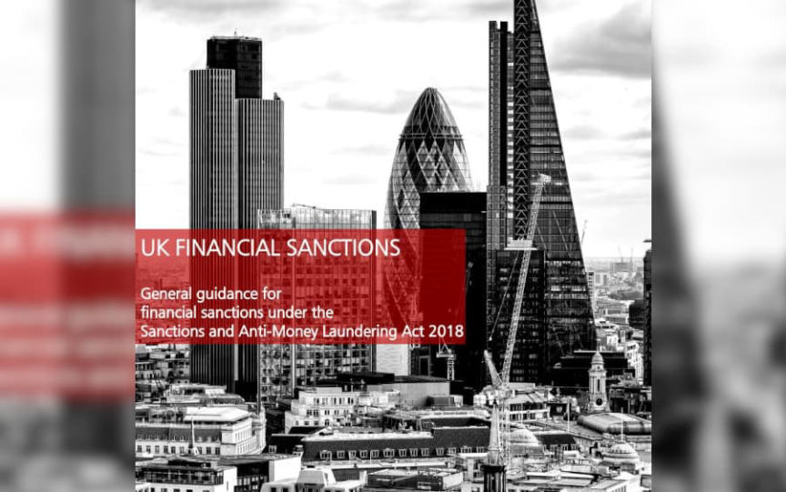
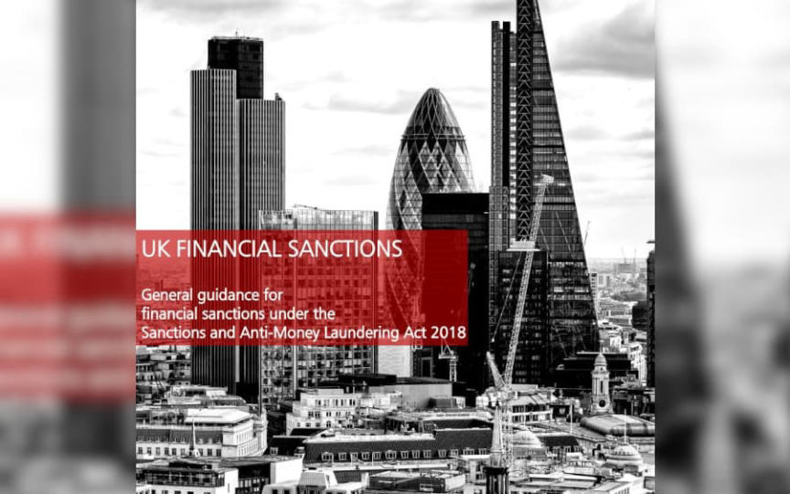

UK Exchanges and Wallets Must Report Sanctions Breaches
~4 min read | Published on 2022-09-07, tagged Exchange, Sanctioned using 799 words.
Updated guidance from the U.K. Treasury requires cryptocurrency exchanges and wallet providers to report suspected sanctions breaches.
The official guidance was updated to include “cryptoassets” in the list of actionable funds.

Under section 3.1.3:<h2 id="asset-freezing-terminology">Asset freezing terminology </h2>
Funds generally means financial assets and benefits of every kind, including but not limited to:[list]*cash, cheques, claims on money, drafts, money orders and other payment instruments*deposits with financial institutions or other entities, balances on accounts, debts and debt obligations*publicly- and privately-traded securities and debt instruments, including stocks and shares, certificates representing securities, bonds, notes, warrants, debentures and derivatives contracts*interest, dividends or other income on or value accruing from or generated by assets*credit, right of set-off, guarantees, performance bonds or other financial commitments*letters of credit, bills of lading, bills of sale*documents showing evidence of an interest in funds or financial resources*any other instrument of export financing.[/list]
Economic resources generally means assets of every kind – tangible or intangible, movable or immovable – which are not funds, but may be used to obtain funds, goods or services. This includes but is not limited to:[list]*precious metals or stones*antiques*vehicles*property[/list]
Goods generally means items, materials and equipment.
Cryptoassets – Statutory definitions of “funds” and “economic resources” are wide, as referenced above. Cryptoassets are considered to be covered by these definitions and are therefore caught by the financial sanctions restrictions.
Under 5.1.2:<h2 id="relevant-firm">Relevant Firm: </h2>
Relevant firms that are subject to specific reporting obligations as set out in U.K. regulations made under the Sanctions Act include:[list]*a person that has permission under Part 4A of the Financial Services and Markets Act 2000 (FSMA 2000) (Permission to carry on regulated activities)*an undertaking that by way of business operates a currency exchange office, transmits money (or any representations of monetary value) by any means, or cashes cheques which are made payable to customers*a firm or sole practitioner that is a statutory auditor or local auditor*a firm or sole practitioner that provides by way of business accountancy services, legal or notarial services, advice about tax affairs or certain trust or company services*a firm or sole practitioner that carries out, or whose employees carry out, estate agency work*the holder of a casino operating licence*a person engaged in the business of making, supplying, selling (including selling by auction) or exchanging articles made from gold, silver, platinum, palladium or precious stones or pearls.*a cryptoasset exchange provider*a custodian wallet provider[/list]
All U.K. sanctions regulations apply to United Kingdom individuals or entities regardless of where they are in the world.
And finally, “Cryptoassets” appears once again under a section of the guidance that provides firms with examples of the type of information to report in the even of a suspected breach of sanctions.<h2 id="examples-of-information-to-be-reported">Examples of information to be reported </h2><thead>
News outlets, such as the British government’s news outlet The Guardian, are reporting the change as an indication that sanctioned Russians are using cryptocurrency to bypass the West’s sanctions. Perhaps this is true. But Lavrov said that Russia effectively does not care about the sanctions. Russia’s economy certainly does not. Seems unlikely that cryptocurrency is being used at any significant scale by sanctioned individuals.
That said, Binance reportedly blocked the accounts of relatives of sanctioned individuals, including Lavrov’s stepdaughter.
UK FINANCIAL SANCTIONS General guidance (pdf)
The official guidance was updated to include “cryptoassets” in the list of actionable funds.

We will take your money and you will be happy
Under section 3.1.3:<h2 id="asset-freezing-terminology">Asset freezing terminology </h2>
Funds generally means financial assets and benefits of every kind, including but not limited to:[list]*cash, cheques, claims on money, drafts, money orders and other payment instruments*deposits with financial institutions or other entities, balances on accounts, debts and debt obligations*publicly- and privately-traded securities and debt instruments, including stocks and shares, certificates representing securities, bonds, notes, warrants, debentures and derivatives contracts*interest, dividends or other income on or value accruing from or generated by assets*credit, right of set-off, guarantees, performance bonds or other financial commitments*letters of credit, bills of lading, bills of sale*documents showing evidence of an interest in funds or financial resources*any other instrument of export financing.[/list]
Economic resources generally means assets of every kind – tangible or intangible, movable or immovable – which are not funds, but may be used to obtain funds, goods or services. This includes but is not limited to:[list]*precious metals or stones*antiques*vehicles*property[/list]
Goods generally means items, materials and equipment.
Cryptoassets – Statutory definitions of “funds” and “economic resources” are wide, as referenced above. Cryptoassets are considered to be covered by these definitions and are therefore caught by the financial sanctions restrictions.
Under 5.1.2:<h2 id="relevant-firm">Relevant Firm: </h2>
Relevant firms that are subject to specific reporting obligations as set out in U.K. regulations made under the Sanctions Act include:[list]*a person that has permission under Part 4A of the Financial Services and Markets Act 2000 (FSMA 2000) (Permission to carry on regulated activities)*an undertaking that by way of business operates a currency exchange office, transmits money (or any representations of monetary value) by any means, or cashes cheques which are made payable to customers*a firm or sole practitioner that is a statutory auditor or local auditor*a firm or sole practitioner that provides by way of business accountancy services, legal or notarial services, advice about tax affairs or certain trust or company services*a firm or sole practitioner that carries out, or whose employees carry out, estate agency work*the holder of a casino operating licence*a person engaged in the business of making, supplying, selling (including selling by auction) or exchanging articles made from gold, silver, platinum, palladium or precious stones or pearls.*a cryptoasset exchange provider*a custodian wallet provider[/list]
All U.K. sanctions regulations apply to United Kingdom individuals or entities regardless of where they are in the world.
And finally, “Cryptoassets” appears once again under a section of the guidance that provides firms with examples of the type of information to report in the even of a suspected breach of sanctions.<h2 id="examples-of-information-to-be-reported">Examples of information to be reported </h2>
| Type of Breach | Examples |
|---|---|
| A designated person | A customer of yours is a known or suspected designated person. You should provide OFSI with any information you hold about the designated person by which they can be identified. If the designated person is a customer you must also inform OFSI of the nature and amount or quantity of any funds or economic resources held on behalf of the customer, at the time this knowledge or suspicion arose |
| Funds and economic resources | You must include details of the nature and amount or quantity of any funds and economic resources held. Types of funds or economic resources can include but are not limited to: • antiques • bond futures • cash • cheques • cryptoassets • land • postal orders • precious metals or stones • vehicles • works of art |
| A designated person | A customer of yours is a known or suspected designated person. You should provide OFSI with any information you hold about the designated person by which they can be identified. If the designated person is a customer you must also inform OFSI of the nature and amount or quantity of any funds or economic resources held on behalf of the customer, at the time this knowledge or suspicion arose. |
| Credits to frozen accounts | A relevant institution must inform OFSI without delay whenever it credits a frozen account: • where it receives funds transferred to it for the purpose of crediting that account A relevant institution must also inform OFSI without delay whenever it transfers funds: • to an account with a ring-fenced body, where both accounts are held or controlled by a designated person |
News outlets, such as the British government’s news outlet The Guardian, are reporting the change as an indication that sanctioned Russians are using cryptocurrency to bypass the West’s sanctions. Perhaps this is true. But Lavrov said that Russia effectively does not care about the sanctions. Russia’s economy certainly does not. Seems unlikely that cryptocurrency is being used at any significant scale by sanctioned individuals.
That said, Binance reportedly blocked the accounts of relatives of sanctioned individuals, including Lavrov’s stepdaughter.
UK FINANCIAL SANCTIONS General guidance (pdf)